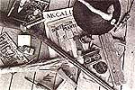
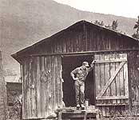
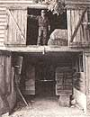

It is an all too familiar tale: An aunt or uncle or grandparent passes away, leaving the family farm to relatives. But the heirs have their own lives to live, can't or don't want to farm and could use some extra cash. So the old homeplace is sold, the proceeds are divided up, and that's that. Life goes on, and the ancestral farm-once the very ground in which the family's roots were anchored-is only a bittersweet recollection, a memory that every so often comes back on a breeze laden with honeysuckle, or perhaps in the sound of a whippoorwill at dusk or in the smell of new-mown hay.
Losing the family farm. It's a story that has repeated itself countless times since the turn of the century. It is the story of the cutting of the American family's rural umbilical-and of the loss of a national heritage.
But stories can be rewritten. Enter Bob ("Skip") Hipps.
The ad ran on April 2,1987, in the Landrum, South Carolina, News Leader: "Young, strong, intelligent man for sale! I am trying to preserve a living part of American history-a 140-plus-year-old working farm that has changed little in all those years. Virtually everything intact and astonishingly well preserved from the 1840s
to date. Handmade tools, quilts, mule drawn farm equipment and personal artifacts from at least six generations of a Polk County pioneer family. I will indenture myself to any person, group or corporation for a period of 10 years (room and board only) in exchange for assistance in the purchasing and opening of The Farm Family Museum. Call for full details, resume and references. I am serious!"
"I thought it was a good idea at the time," says Bob Hipps, his voice revealing the frustration that lingers several months later. "And I really was serious. But the only people I heard from were crazies.
" Some people might say it's Hipps who's crazy. Why would any sane 33-year-old man give up a $30,000-a-year government job, sell all his belongings, move from New Jersey to the remote hills of Cooper's Gap, North Carolina, and even put himself up for sale-all to save a rundown old farm?
But Hipps doesn't see the farm-or his cause-that way. From his perspective, he's fighting a desperate battle against time and money to save a living, breathing piece of the past, an entire post-Civil War subsistence farm frozen in time. "It's as though everyone here left for work one day and locked the door, and nobody opened it up again for 100 years," says Hipps. "This farm represents an opportunity to preserve a unique heritage for future generations. And it's not just my heritage; it's everyone's. Most families can trace their roots back and find relatives who lived a lot like these people lived.
" Bob Hipps grew up the son of an air force career man. "Home" was wherever his dad happened to be stationed: New York, Arizona, Florida. Later, he joined the service himself-the navy-and for eight years traveled the world. But regardless of where he was, Bob always knew there was one place on the globe he could come back to: Overhome-the name used by family members and neighbors for the Jackson farm, 95 acres of woods and pastures nestled at the base of Wildcat Spur, a mountain in the foothills of western North Carolina. The farm has been in the family since at least 1842. (Hipps is related to the Jacksons by way of his grandmother.)
Technology and easy living simply never found the Jackson farm. That was just fine with the people who lived there last-Hipps' great uncles Ragan, Hemophilia and Hobart, and his great aunt Frances. They worked the place with mules. They raised their own food, churned their own butter and made their own soap, their own chairs, their own clothing. They hammered out door hinges, tools, even an iron bedstead, on a forge.
The place wasn't wired for electricity until the '50s, and even then kerosene lamps al ways provided the major source of light. When they finally bought a freezer, they opened it just once a week-to save on the electricity bill. "When we would go Overhome," says Hipps, "it was like a whole different world, like stepping back into yesterday. To be able to see and participate in things that most people could only read about-to help Uncle Hobart hitch the mules, to watch Aunt Frances churning butter. It was fascinating.
" But last May, Ragan Jackson, the last person to occupy the farm full-time, died. When Skip's grandmother passed away the following November, Skip was told that the only way to satisfy the two wills was to sell the place and divide the proceeds among 11 named heirs. Worse, the heirs had decided that in order to get the best price for the farm, it would not be for sale to family members.
"I was shocked," he says. "Suddenly, the only thing in my life that had been a constant from as early as I could remember was going to disappear." Hipps became obsessed with saving the farm. Each weekend, he would leave his job in Fort Monmouth, New Jersey, climb into his pickup truck and make the 1,000-mile round trip to Cooper's Gap, where he talked to relatives, neighbors, anyone who might give him some ideas on how to keep the farm in the family.
One day he drove up the farm's one-half-mile dirt driveway and found an auctioneer who had been hired to sell off the contents of the place. The man had gone through the house and outbuildings, putting stickers on literally hundreds of items large and small-tools, quilts, furniture, books, farm machinery and personal possessions and memorabilia of every description. "Until that time, no one really knew what was there," says Hipps. "No one had unpacked all the cubbyholes, the drawers, the boxes. When I saw what was there, I realized immediately the historical significance, and I knew right then that a museum had to be created.
" Knowing such an effort would require all his time, Hipps went back to New Jersey, took a leave of absence from his job, sold nearly all his earthly possessions ("everything except my cat, Floozie, and some fishing gear") and moved to Cooper's Gap. He spent most of March and April in a tent set up in a shed, until one of the heirs gave him permission to stay in the house. He sleeps there today, on the floor: "The auctioneer threw out all the feather beds and straw ticks, because he didn't think they'd bring any money.
" His ancestors would've been appalled at such waste. "They never threw anything away," says Skip. "If they had something they didn't need at the time, they'd carefully store it-just in case." He points to an old Victrola in the parlor: "The packing crate's upstairs.
"This would be the only 100% authentic farm museum..."
"Virtually everything and anything that came to this farm stayed on this farm," Hipps remarks. The result is a 95-acre time capsule with a five-bedroom frame house and 16 outbuildings packed with the possessions and tools and implements and miscellanea accumulated over a century and a half by six generations. Virtually all of it is in good enough condition to be used today. The sense of suspended time is eerie. A 100year-old grain thresher rests in near working order under a shed roof.
In a loft, stacks of broom straw wait to be bundled into brooms. A side of ham still hangs in the smokehouse, and beneath it is a pan of lye soap. Tobacco hangs from the rafters in another outbuilding. Wagon wheel hubs-handmade and never used, mind you-are stored in another shed, along with a horse drawn hay rake, mowing machine, grain drill, drag harrows, plows and planters. "Many of the tools here are strictly one-of-a-kind," says Hipps.
"If my ancestors couldn't find the right tool for the job, they invented it."
There is ample evidence of the Jacksons' ingenuity. A chicken thief intent on entering the Jacksons' coop at night would've had a hard time finding the latch-there is no handle or bolt. You open the door by poking a twig through a hole to release a catch. The Jacksons kept books, receipts, letters, magazines, newspaper articles. A grocery list dated 1857 lists three pounds of coffee, a wire comb, castor oil, a paper of pins, six gun flints, one-half pound of gunpowder and one wool hat. The receipt was found inside the wool hat-which looks almost new. But time, so long a stranger to Overhome, is catching up to the old place. Hipps was able to prevent the auction of the farm's contents by purchasing the lot for $45,000-paid for with a note granted to him by a group of local residents who also recognize Overhome's historic value. In January, he formed a corporation and telegraphed an anonymous offer of $140,000 for the farm's land and buildings-and the heirs accepted. But the closing date is past due, and many of the heirs (all of whom have since been told of Hipps' involvement in the corporation) are growing impatient for their money. Hipps and his supporters are trying hard to hold on to their vision of a living farm museum like no other.
"As far as I know," Skip says, "this would be the only 100% authentic farm museum in the country, with all the original buildings and possessions and implements. Other places have had to buy artifacts or bring in buildings to make their collections complete." Already, Skip has shown the farm to well over 1,000 people. Museum curators, historians and preservation experts who've visited agree that the Jackson farm is unique and worth saving. Hipps works virtually around the clock to establish nonprofit status for the farm (required, he says, for government funds) and to raise the money to purchase the land. "If push comes to shove, if I can't come up with the money, I'm going to lose," Hipps admits.
"But there's no way I'm going to stop fighting." He stands on the side porch of his ancestors' weathered old house, his eyes scanning the outbuildings and the pastures beyond. "I'm doing the best I can with what I have and that's all they ever did," he says, draw ing strength from those who lived here be fore him. "They never quit just because something didn't work the first time. They tried another way."
Editor's Note: For an update on the status of Skip Hipps' efforts, and for information on how you can help, write The Jackson F
arm Project, 299 Ragan Jackson Rd., Mills Spring, NC 28756, or phone
704/625-1051.
|
 Fighting against time to save a legacy. |
 The family farm, 0verhome, held too much of value for Skip to simply sit by and let the developers carve it up. He just might win this battle, too. |
 ""Virtually everything that came to this farm stayed on this farm."" |